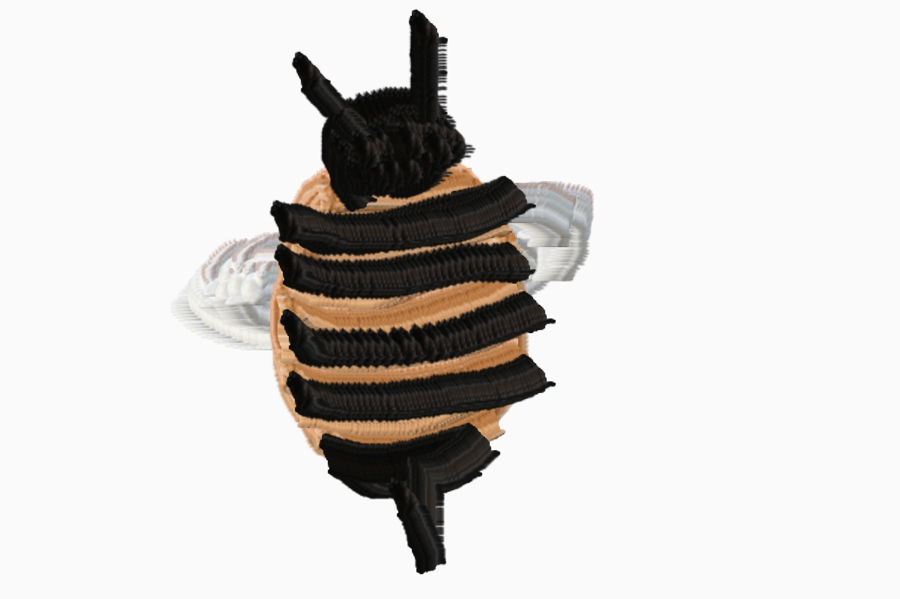
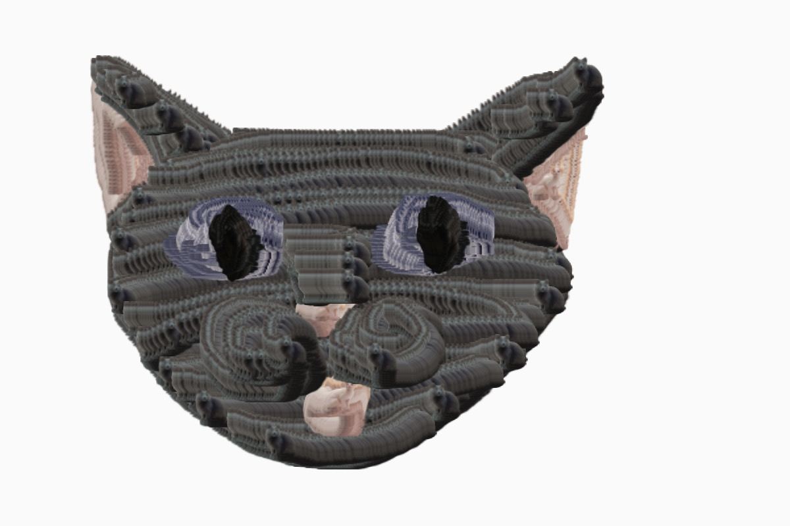
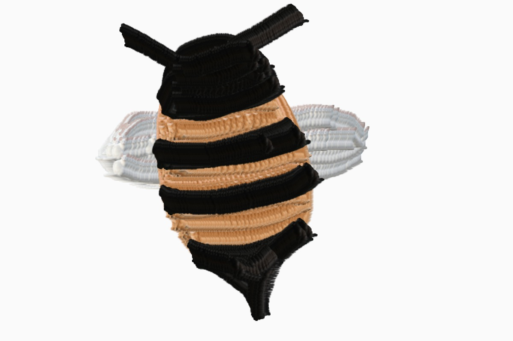
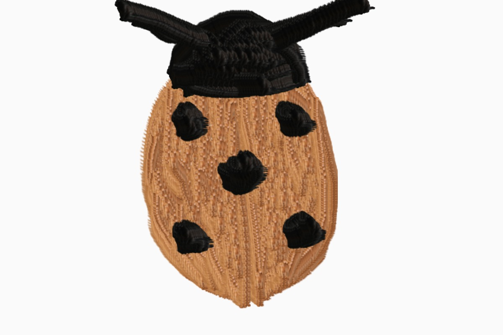
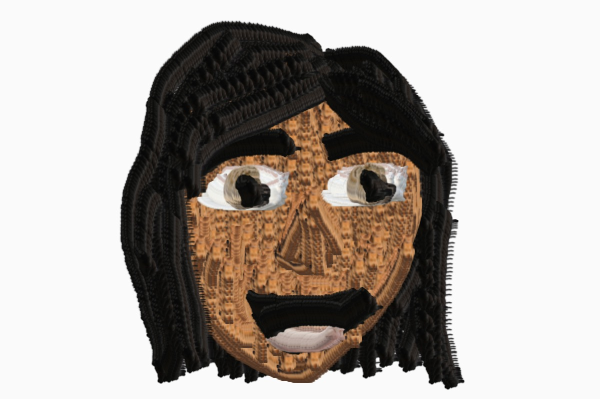
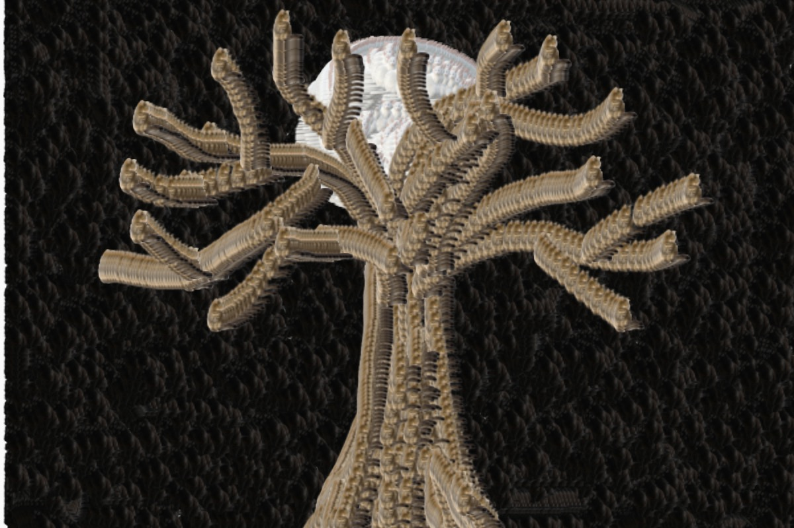

Using p5.js Processing programming again, I made my own sort of painting tool program. Each "tool" is a different color of cat, which basically work as different colors of paint. Literally every brush is a different colored cat. That way you can make drawings and images comprised of little cats. The significance of this is representative of how cats are basically popular, and everywhere on the internet. Below are some of the images I made using this program, I made multiple drawings so as to use all the brushes that I added in.

A Fuzzy Bumblebee

A Cat Made Out of Cats

A Better Fuzzy Bumblebee

A Ladybug Attempt

A Self Portrait Attempt

A Tree by the Moonlight